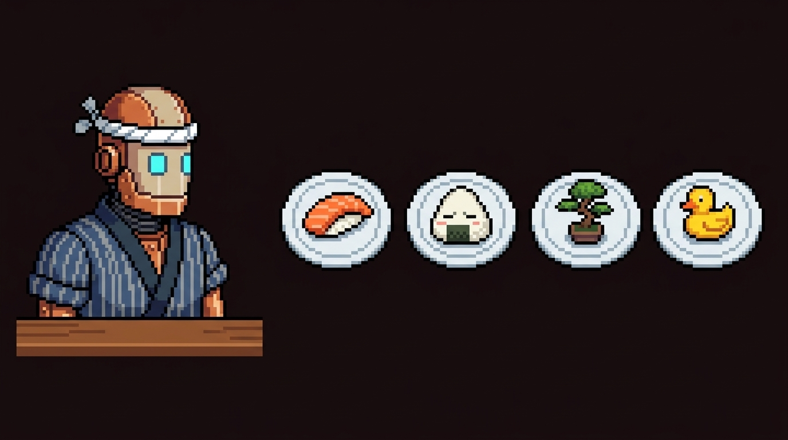

Built 2026-10-01 16:01 UTC. Branch site/final-pixel-restaurant.
Style probe (one Gemini 3 Pro Image call, canon #19 as reference, unprocessed)

Not final art. Shows the palette direction, white plates with faint grey-blue rim, off-centre items, no mouth, pupil-free eyes. Final assets go through grid-snap → 48-colour palette → LibreSprite .ase/sheet export.